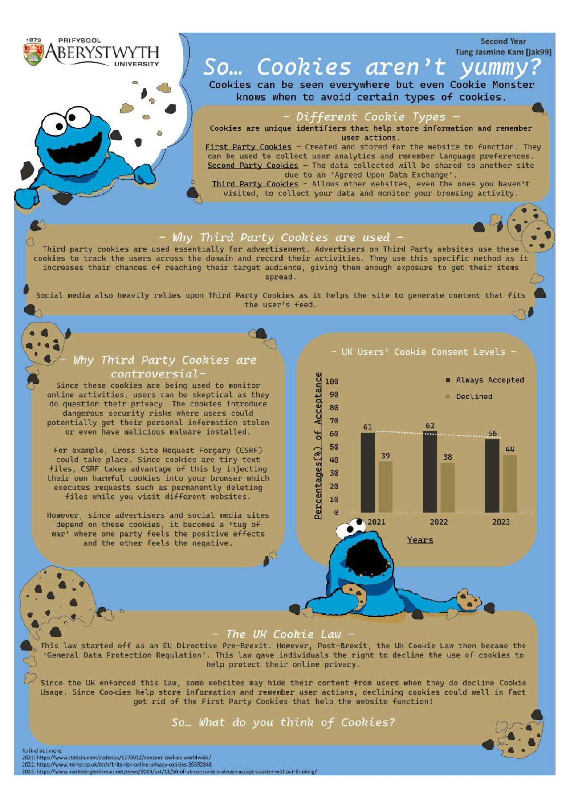

Hi, I'm Jasmine - A Final Year Computer Science Student
Here's a little about me:
Here's what I've been getting down to:
Movie Recommender - incomplete
Foreign Exchange Currency Prediction Model
- This model uses pretrained currency pickle files to create exchange rate predictions for the future.
Poster - So...Cookies aren't yummy?
-
This poster was created for the 17th Lovelace at Liverpool, getting the People's Choice Award.
The concept was to make people aware of Third Party Cookies. It was a surprise to see how many people accepted cookies without knowing the consequences it could hold.

Graph selector - incomplete
Poster - Smartphones...Are they healthy for us?
-
This poster was created for the 16th Lovelace at Sheffield getting an honourable mention.
The topic was to make people aware of the impacts of smartphones especially since COVID-19.
Showing recent survey results and how different countries are implementing methods to
increase the safety for pedestrians who are glued to their phones.